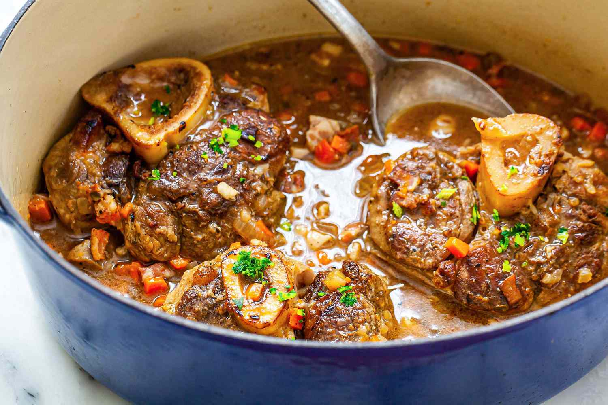

Osso Buco

Description
Osso buco is a classic Italian dish made with veal shanks that are braised in a rich tomato sauce. The word "osso buco" literally means "hole bone" in Italian, referring to the marrow-filled hole at the center of the veal shank. To prepare osso buco, the veal shanks are first coated in flour and browned in a pan with a little bit of oil. They are then transferred to a pot or casserole dish and simmered with vegetables, white wine, and beef broth for several hours until the meat is tender and falls off the bone.
Osso buco is typically served with the braising liquid, which has been thickened with a small amount of tomato paste. It is traditionally accompanied by a side of gremolata, a mixture of minced parsley, garlic, and lemon zest, which is sprinkled over the dish before serving. Osso buco is a hearty and flavorful dish that is perfect for a cold winter day, and it is often served with a side of creamy polenta or risotto.
Ingredients
- Veal shanks: 4-6 (about 2-3 pounds/900-1350 grams total)
- All-purpose flour: 1/2 cup (65 grams)
- Olive oil: 2 tablespoons
- Carrots: 2, diced
- Onions: 2, diced
- Celery: 2 stalks, diced
- Crushed tomatoes: 1 can (28 ounces/800 grams)
- White wine: 1 cup (240 ml)
- Beef broth: 1 cup (240 ml)
- Salt: to taste
- Black pepper: to taste
These are just some basic measurements, but feel free to adjust the quantities to your taste. You can also add other ingredients, such as vegetables or a béchamel sauce, if you like.
Steps
- Coat the veal shanks: Preheat the oven to 350°F (180°C). Pat the veal shanks dry and season them with salt and pepper. Place flour in a shallow dish and coat the shanks in the flour, shaking off any excess.
- Brown the meat: Heat a large Dutch oven or casserole dish over medium-high heat. Add a small amount of oil to the pot and when it is hot, add the veal shanks. Brown the shanks on all sides, about 2-3 minutes per side.
- Sauté the vegetables: Reduce the heat to medium and add diced carrots, onions, and celery to the pot. Sauté the vegetables until they are softened, about 5-7 minutes.
- Braise the meat: Add a can of crushed tomatoes, a cup of white wine, and a cup of beef broth to the pot. Bring the mixture to a simmer, then cover the pot and transfer it to the oven. Braise the veal shanks in the oven for 2-2 1/2 hours, or until the meat is very tender and falls off the bone.
- Serve the osso buco: Remove the pot from the oven and let the osso buco cool for a few minutes. Serve the veal shanks with the braising liquid and vegetables, garnished with gremolata (a mixture of minced parsley, garlic, and lemon zest) if desired. Enjoy!
Back to main page